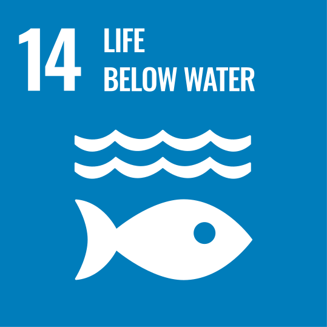

What's the Next?
FUTURE PROJECTS
Tell us your story. We're seeking researchers, NGOs, Fab Labs, and makers to launch the next deployment.
Participate
Join an existing open-source challenge. Contribute to a build. Deploy a replicate kit in your local Fab Lab.
Browse open challengesInitiate
Have a research question that needs a hardware answer? Submit your proposal and we'll help find the right tools.
Submit your projectFollow & Share
Follow us for the latest deployments, open-source tools, and interspecies research stories from the field.
Follow on FacebookAligned with UN Sustainable Development Goals
